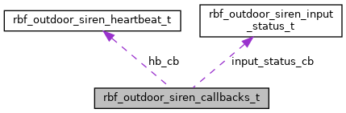

|
RBF SDK
|
Outdoor siren callback functions cluster. More...
#include <rbf_outdoor_siren.h>

Public Attributes | |
| rbf_outdoor_siren_heartbeat_callback_t | hb_cb |
| rbf_outdoor_siren_input_status_update_callback_t | input_status_cb |
Outdoor siren callback functions cluster.
| rbf_outdoor_siren_heartbeat_callback_t rbf_outdoor_siren_callbacks_t::hb_cb |
Heartbeat callback function
| rbf_outdoor_siren_input_status_update_callback_t rbf_outdoor_siren_callbacks_t::input_status_cb |
Input status update callback function
1.8.17